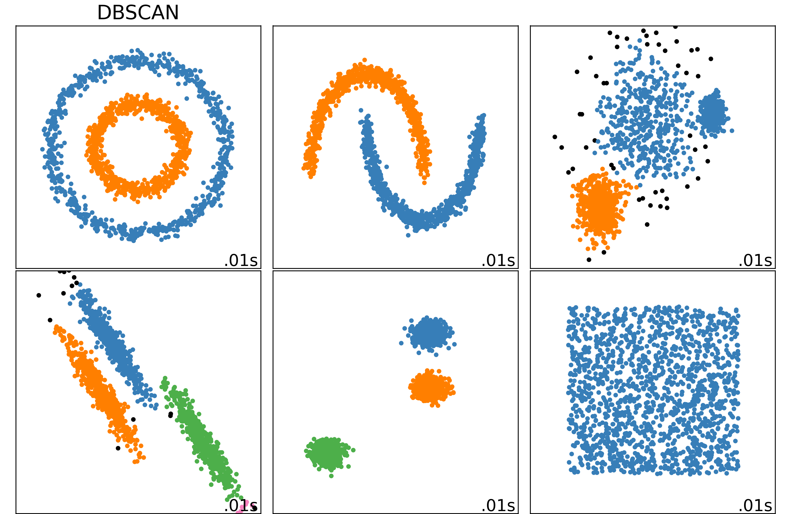

DBSCAN¶
DBSCAN defines clusters as continous regions of high density:
For each instance count how many instances are located within a small distance \(\epsilon\) from it.
If an instance has at least min_samples instance in its \(\epsilon\)-neighborhood, then it’s a core instance.
All instances in the same neighorhood of a core instance belong to the same cluster.
Any instance that is not a core instance and does not have one in its neighborhood is considered an anomaly.
This algorithm works well if all the clusters are dense enough and if they are well separated by low-density regions.
{kind=link}
Examples¶
from sklearn.cluster import DBSCAN
from sklearn.datasets import make_moons
X, y = make_moons(n_samples=1000, noise=0.05)
X.shape, y.shape
((1000, 2), (1000,))
# specify epsilon & min_samples
dbscan = DBSCAN(eps=0.05, min_samples=5)
dbscan.fit(X)
DBSCAN(eps=0.05)
# cluster of each instance, -1 represent anomaly
dbscan.labels_[: 10]
array([0, 1, 2, 0, 0, 2, 0, 2, 1, 2])
# indices of core instances
dbscan.core_sample_indices_[: 10]
array([ 0, 1, 2, 3, 4, 5, 6, 8, 9, 11])
# core instances
dbscan.components_
array([[ 1.62078667, -0.32213247],
[-0.77682345, 0.62289917],
[ 1.98354814, 0.3925419 ],
...,
[ 0.25722524, -0.09337986],
[ 2.04344498, 0.34177835],
[-1.01121218, 0.22603761]])
Predict¶
"""
The DBSCAN class does not have a predict() method,
although it has a fit_predict() method --> y_pred = dbscan.fit_predict(X).
To predict new instances, we need to implement an extra classification task,
this give us the freedom to choose different classification algorithms.
"""
from sklearn.neighbors import KNeighborsClassifier
knn = KNeighborsClassifier(n_neighbors=50)
# only use core instances
knn.fit(dbscan.components_, dbscan.labels_[dbscan.core_sample_indices_])
KNeighborsClassifier(n_neighbors=50)
import numpy as np
X_new = np.array([[-0.4, 0], [0, 0.6], [1, -0.1], [2, 1.1]])
knn.predict(X_new)
array([3, 3, 4, 2])
knn.predict_proba(X_new)
array([[0. , 0. , 0. , 0.96, 0. , 0.04],
[0. , 0.28, 0. , 0.72, 0. , 0. ],
[0.46, 0. , 0. , 0. , 0.54, 0. ],
[0. , 0. , 1. , 0. , 0. , 0. ]])